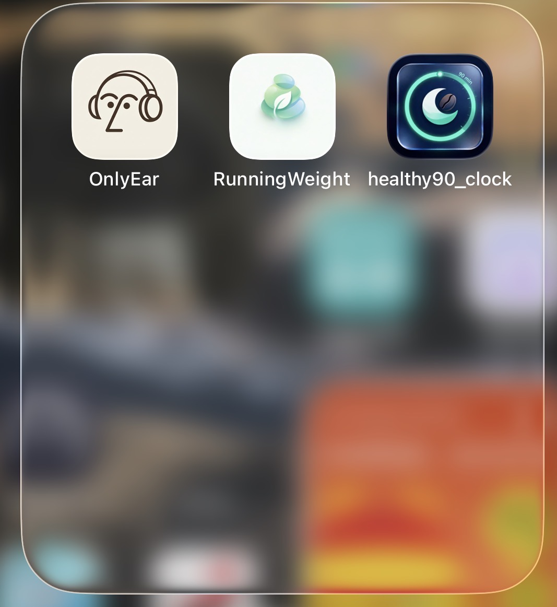

极简音频博客
定位为本地化音频转换与管理工具：视频/在线链接转音频、后台播放、本地音乐库、私密笔记与心情日记。
Local-firstAudioPrivacy
SwiftUI · Productization
研究生阶段计划申请苹果开发者账号并持续打磨 3 款自研 App：OnlyEar、healthy90_clock、RunningWeight。方向覆盖音频工具、睡眠健康与 AI 体脂管理。

App Portfolio
定位为本地化音频转换与管理工具：视频/在线链接转音频、后台播放、本地音乐库、私密笔记与心情日记。
基于 90 分钟睡眠周期的健康管理系统：智能闹钟、咖啡因追踪、Coffee Nap、白噪音助眠与睡眠分析。
Agent 架构的身材管理系统：OpenAI Vision 食物热量识别、个性化推荐、营养数据库和 8 款成就徽章。
Product System
音频、睡眠、身材管理都来自高频个人场景，适合作为独立开发者产品入口。
用系统组件和本地存储先打通核心流程，再逐步加入 AI 能力。
RunningWeight 通过视觉识别与 Harness 工程，把手动记录变成半自动化建议系统。
申请开发者账号后，以 App Store 链接、用户反馈、留存数据和版本路线图持续验证产品方向。
Project Materials